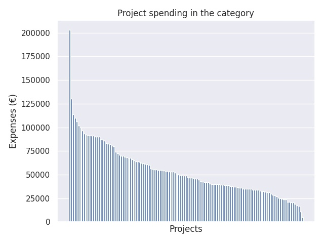

Opetustoimen ja varhaiskasvatuksen henkilöstökoulutus 2017
Category summary
54.3K spent on average
203K highest spending

Reports in the category
Niilo Mäki Instituutti
Project name: Hyvinvointia ja turvallisuutta kasvua, oppimista ja koulunkäyntiä tukemalla
203K spent
Haaga-Helia Ammatillinen opettajakorkeakoulu
Project name: Ihmisoikeudet haltuun!
131K spent
Ammattiopisto Spesia Oy
Project name: Henkilökohtaistaminen ja erityinen tuki
113K spent
Pro Practica Oy
Project name: LOISTO - Varhaiskasvatuksen kehittämisverkoston kehittämistoiminnan tukeminen
110K spent
Hengitysliitto ry / Ammattiopisto Luovi
Project name: SOS - Sujuva ohjaus ja siirtymät
106K spent
Helsingin kaupungin opetusvirasto
Project name: Lukion vertaistutorien koulutus
102K spent
Oulun ammattikorkeakoulu Oy/Ammatillinen opettajakorkeakoulu
Project name: OsaOppi V - Digipedagogiikka osaamisperusteisen oppimisen tukena
100K spent
Haaga-Helia Ammatillinen opettajakorkeakoulu
Project name: Kohti reformia
96.5K spent
Helsingin yliopiston koulutus ja kehittämispalvelut, HY+ Oy
Project name: Radikalisoituminen ja estremismi - syrjäytymisen ehkäisy kouluissa
93.5K spent
Centret för livslångt lärande vid Åbo Akademi och Yrkeshögskolan Novia
Project name: Ledarskap som medel för skolutveckling
92K spent
Niilo Mäki Instituutti
Project name: Yhteispeli - hyvinvointia oppilaille ja työyhteisöille
91.9K spent
Jyväskylän ammattikorkeakoulu, ammatillinen opettajakorkeakoulu
Project name: Kohti reformia (Tutke 3)
91.5K spent
Suomen ympäristöopisto SYKLI Oy
Project name: Meidän paikka – teknologia, muotoilu, luovuus ja kestävä kehitys
91.4K spent
Tampereen ammattikorkeakoulu Oy
Project name: Kohti reformia (TUTKE 3)
91K spent
Jyväskylän ammattikorkeakoulu, ammatillinen opettajakorkeakoulu
Project name: Digipedagogisen osaamisen valmennusohjelma
90.2K spent
Pro Practica Oy
Project name: Majakka tuotteistaminen ja Iso Majakka
90K spent
Oulun ammattikorkeakoulu Oy/Ammatillinen opettajakorkeakoulu
Project name: Kohti reformia (Tutke3)
90K spent
Centret för livslångt lärande vid Åbo Akademi och Yrkeshögskolan Novia
Project name: Mot en ny småbarnspedagogik
87.3K spent
Hämeen ammattikorkeakoulu Oy
Project name: Kohti reformia (Tutke 3)
86.9K spent
Toimihenkilöjärjestöjen Opintoliitto ry/Helsingin aikuisopisto
Project name: Luku- ja kirjoitustaidon opetus oppivelvollisuusiän ylittäneille
85.8K spent
Lahden kaupunki
Project name: Johtaja luotsina uudistumisen ja uudistamisen prosesseissa.
83.4K spent
Hämeen ammattikorkeakoulu Oy
Project name: Mocoma - Mooceista oma digipolku
82.8K spent
Suomen ympäristöopisto SYKLI
Project name: ILMIÖT IHMETELTÄVIKSI - Monialaista oppimista ulkona
82.1K spent
Niilo Mäki Instituutti
Project name: Yhteisöllistä hyvinvointia, turvallisuutta ja pedagogista kehittymistä varhaiskasvatuksesta perusopetukseen
80.5K spent
Teatteriyhdistys Pensas ry
Project name: Taika – monitaiteista taidekasvatusta varhaiskasvattajille
80.1K spent
Hengitysliitto ry / Ammattiopisto Luovi
Project name: Hyvä fiilis - tehdään yhdessä. Tunne ja vuorovaikutustaidoilla hyvinvointia ja turvallisuutta oppilaitoksiin
74.3K spent
Amialife Oy
Project name: Muistisairaan ihmisen hoitotyön vaikuttavat käytännöt: tietoa ja pedagogisia välineitä opetukseen ja ohjaukseen
72.4K spent
Seinäjoen koulutuskuntayhtymä / Opinlakeus
Project name: ePAKKI II – perustaitajista pilvipalvelujen tehokäyttäjiksi
71K spent
Centret för livslångt lärande vid Åbo Akademi och Yrkeshögskolan Novia
Project name: Ledning och utveckling inom småbarnspedagogik och förskola
70K spent
Matemaattisten Aineiden Opettajien Liitto MAOL ry
Project name: Ohjelmistojen pedagoginen hyödyntäminen matematiikassa, fysiikassa ja kemiassa
69.9K spent
Jyväskylän ammattikorkeakoulu, ammatillinen opettajakorkeakoulu
Project name: Yhdessä turvallista ja yhteisöllistä oppilaitosta rakentamaan
69K spent
Helsingin yliopiston Koulutus- ja kehittämispalvelut HY+
Project name: Oppimisen ja opettajuuden muutos – positiivinen haaste pedagogiselle johtajuudelle
68.4K spent
Oulun yliopisto, Täydentävien opintojen keskus (TOPIK)
Project name: Taitoja ja työkaluja digi-osaamiseen
67.7K spent
Tornion kaupunki / Tornion kansalaisopisto
Project name: Meänmaan verkko-opisto II
67.5K spent
Helsingin yliopiston koulutus- ja kehittämispalvelut HY+ Oy
Project name: Moninaisuuden rikkaus opetuksessa
66K spent
Centret för livslångt lärande vid Åbo Akademi och Yrkeshögskolan Novia
Project name: Framtidens informationskompetens
65.3K spent
Oulun yliopisto, Täydentävien opintojen keskus (TOPIK)
Project name: Hyvän johtamisen polku – Tukea johtamisen eri vaiheisiin opetus- ja kasvatusalalla
64K spent
Oulun ammattikorkeakoulu Oy/Ammatillinen opettajakorkeakoulu
Project name: Hyppää osallisuusjunaan! – hyvinvoinnin ja turvallisuuden edistämistä osallisuuden keinoin
64K spent
Rauhankasvatusinstituutti ry
Project name: Yhtä aikaa! - yhdenvertaisuus- ja tasa-arvosuunnittelukoulutus
63.5K spent
Turun yliopisto/Tulevaisuuden tutkimuskeskus
Project name: Tulevaisuus paljon mahdollista! - Tulevaisuusohjauksen menetelmät ja työkalut
62.1K spent
Oulun yliopisto, Täydentävien opintojen keskus (TOPIK)
Project name: Hyvä mieli, parempi koulu
61.6K spent
Metropolia ammattikorkeakoulu Oy
Project name: Toiminnalliset menetelmät valmentavien ja valmistavien luokkien opetuksessa
61K spent
Haaga-Helia Ammatillinen opettajakorkeakoulu
Project name: Onnistu reformin johtajana
60.5K spent
Turun kaupunki, sivistystoimiala, Turun ammattiinstituutti, aikuiskoulutus
Project name: PedaRoihu
60.2K spent
Jyväskylän ammattikorkeakoulu, ammatillinen opettajakorkeakoulu
Project name: Tukea tarvitsevat aikuiset ammatillisessa koulutuksessa
56.7K spent
Jyväskylän ammattikorkeakoulu, ammatillinen opettajakorkeakoulu
Project name: Kehity aikuispedagogiikan osaajana!
56.1K spent
Suomen Mielenterveysseura ry.
Project name: Lapsen mieli -levittämishanke 2
55.6K spent
Jyväskylän ammattikorkeakoulu, ammatillinen opettajakorkeakoulu
Project name: Opettaja uraohjaajana moninaistuvissa oppimisympäristöissä
55.3K spent
Centret för livslångt lärande vid Åbo Akademi och Yrkeshögskolan Novia
Project name: Programmera mera - ProgPrep 2.0
55K spent
Haaga-Helia Ammatillinen opettajakorkeakoulu
Project name: Esimiehestä valmentavaksi esimieheksi
54.9K spent
Suomen ympäristöopisto SYKLI
Project name: ULOS OPPIMAAN – tukea päiväkotien luonto- ja ympäristökasvatukseen
54.7K spent
Matemaattisten Aineiden Opettajien Liitto MAOL ry
Project name: Digitaalisten aineistojen pedagoginen hyödyntäminen matematiikassa, fysiikassa ja kemiassa
54.1K spent
Helsingfors universitets utbildnings- och utvecklingstjänster HY+
Project name: Den nya grundskolepedagogiken
53.6K spent
Jyväskylän yliopisto, Koulutusjohtamisen instituutti
Project name: Johtamalla ja kehittämällä kohti inklusiivista koulua
53.5K spent
Hämeen ammattikorkeakoulu Oy
Project name: Tuunattuna tulevaan - hyvinvoivana muutoksessa
53.4K spent
Itä-Suomen yliopisto, koulutus- ja kehittämispalvelu Aducate
Project name: Maahanmuuttajien opinto- ja urapolkujen tukeminen ohjauksessa 10 op
53.3K spent
Lapin yliopisto, KTK, Opetus- ja kasvatusalan täydennyskoulutusyksikkö
Project name: Oppimisen ja kasvun haasteet varhaiskasvatuksessa ja esiopetuksessa
53K spent
Oulun yliopisto, Täydentävien opintojen keskus (TOPIK)
Project name: Tunnista, tiedosta, toimi - yksilöllisestä kohtaamisesta onnistuneeseen oppimiseen
52.2K spent
Suomen Mielenterveysseura ry
Project name: Hyvää mieltä yhdessä -levittämishanke 2
50.8K spent
Naisasialiitto Unioni ry
Project name: Tasa-arvoinen päiväkoti
50K spent
Metropolia Ammattikorkeakoulu Oy
Project name: Pelikoulutuksen rakenteet
49.5K spent
Hämeen ammattikorkeakoulu Oy
Project name: Avaimia ohjaukseen - taitotreenit
49.5K spent
Axxell Utbildning Ab
Project name: Taitoavain
49.1K spent
Kehitysvammaliitto ry / Elinikäisen oppimisen yksikkö
Project name: HAUKI ON KALAsta digiaikaan!
49.1K spent
Turun kesäyliopisto
Project name: Eloa ja iloa monimuotoiseen kieltenopetukseen
47.3K spent
Axxell Utbildning Ab
Project name: EVÄITÄ MOPVAAN - maahanmuuttajien oppimisvalmiuksien kehittäminen ammatillisessa koulutuksessa
46.8K spent
Suomen Kansanopistoyhdistys-Finlands Folkhögskolförening ry
Project name: Digitaalisuus opistojen strategiaan, pedagogiikkaan ja käytäntöön -hanke
46.8K spent
Jyväskylän ammattikorkeakoulu, Ammatillinen opettajakorkeakoulu
Project name: TUNNE-, TURVA- JA SOSIAALISET TAIDOT OPPIMISEN, PITKÄJÄNTEISEN YHTEISTYÖN JA KOTOUTUMISEN TUKENA
46.3K spent
Itä-Suomen yliopisto / Aducate
Project name: Lapsen ja nuoren voimavarojen, tunnetaitojen ja vuorovaikutustaitojen vahvistaminen
46K spent
Helsingin yliopiston Koulutus- ja kehittämispalvelut HY+ Oy
Project name: Nuorten tietotyötaitojen ja digitaalisten taitojen tukeminen
45.9K spent
Finnoschool oy
Project name: ATLAS- tutkimusmatka maailmaan - kohti ilmiölähtöistä oppimista
44.9K spent
Jyväskylän yliopisto, Koulutusjohtamisen instituutti
Project name: Johtajuus varhaiskasvatuksessa: koulutus varhaiskasvatuksen johtotehtävissä toimiville
43K spent
Centret för livslångt lärande vid Åbo Akademi och Yrkeshögskolan Novia
Project name: En för alla och alla för en - att stöda och handleda ungdomars välmående och motivation i skolan
42.5K spent
Itä-Suomen yliopisto, Koulutus- ja kehittämispalvelu Aducate
Project name: Uraohjaus – tukea työuralle suuntautumiseen
42.1K spent
Jyväskylän ammattikorkeakoulu, Ammatillinen opettajakorkeakoulu
Project name: Vuorohoidon erityispiirteet varhaiskasvatuksessa
41.9K spent
Mannerheimin Lastensuojeluliitto
Project name: Osallisuutta oppimassa
41.8K spent
Jyväskylän ammattikorkeakoulu, ammatillinen opettajakorkeakoulu
Project name: Meininkiä ja menestystä menetelmillä
40.5K spent
Ammattiopisto Spesia Oy
Project name: Valmennan ja ohjaan nivelvaiheissa
40.1K spent
Helsingin yliopisto, Koulutus- ja kehittämispalvelut HY+
Project name: Hyvinvoiva lapsi ja nuori! Lasten ja nuorten tunne- ja tietoisuustaito-ohjaajakoulutus
40.1K spent
WWF
Project name: Oppilaslähtöistä ympäristötyötä koulun arjessa
40.1K spent
Lapin yliopiston Koulutus- ja kehittämispalvelut
Project name: Lapsi edellä - pedagogisia työkaluja varhaiskasvatukseen
40K spent
Itä-Suomen yliopisto, koulutus- ja kehittämispalvelu Aducate
Project name: Koulun ja kodin yhteistyö monikulttuurisessa ja –kielisessä toimintaympäristössä (10 op)
39.8K spent
Ammattiopisto Spesia Oy
Project name: Neuropsykiatrinen valmentaja 20 op
39.2K spent
Lapin yliopiston Koulutus- ja kehittämispalvelut
Project name: Aikuinen oppijana - Pedagogisen osaamisen kehittäminen vapaassa sivistystyössä
39.1K spent
Tampereen kesäyliopistoyhdistys ry
Project name: Valmiuksia ja osaamista monikulttuurisiin kohtaamisiin
39K spent
Metropolia Ammattikorkeakoulu Oy
Project name: Digitaaliset työvälineet haltuun
39K spent
Helsingfors universitets utbildnings- och utvecklingstjänster HY+
Project name: De kompetensbaserade yrkesexamina
38.8K spent
Metropolia Ammattikorkeakoulu Oy
Project name: Muutoksen johtaminen toisen asteen oppilaitoksessa
37.6K spent
Centret för livslångt lärande vid Åbo Akademi och Yrkeshögskolan Novia
Project name: Kompetensutveckling inom yrkesutbildningen
37.6K spent
Laurea-ammattikorkeakoulu
Project name: Turvallinen, väkivallaton koulu
37.2K spent
Oulun yliopisto, Täydentävien opintojen keskus
Project name: Vapaan sivistystyön pedagogiikkapäivitys
37.1K spent
Helsingin yliopiston koulutus- ja kehittämispalvelut HY+
Project name: Voimaa ohjaukseen ja opetukseen!
36.4K spent
Lapin yliopiston Koulutus- ja kehittämispalvelut
Project name: TVT vapaan sivistystyön opetuksen kehittämisessä 12 op
36.1K spent
Hämeen ammattikorkeakoulu Oy
Project name: DigiErkka
35.9K spent
Helsingin yliopisto, kasvatustieteellinen tiedekunta
Project name: Vaativa erityinen tuki kehittyy Oulussa - Vatti K2O
35.2K spent
Centret för livslångt lärande vid Åbo Akademi och Yrkeshögskolan Novia
Project name: Mer än en berättelse!
35.1K spent
Centret för livslångt lärande vid Åbo Akademi och yrkeshögskolan Novia
Project name: Upptäck helheter och sammanhang inom läroämnet omgivningslära
35K spent
Aikuis- ja täydennyskoulutuspalvelut AIKOPA, Kajaanin yliopistokeskus
Project name: Leikkikipinää!
35K spent
Touko Voutilaisen koulusäätiö
Project name: Kieli- ja lukutaitotietoisuus aikuisten perusopetuksessa
34.8K spent
Itä-Suomen yliopisto, koulutus- ja kehittämispalvelu Aducate
Project name: Traumojen ja kriisien kohtaaminen maahanmuuttajataustaisten oppilaiden opetus- ja ohjaustyössä (8 op)
34.2K spent
Ilona IT Oy
Project name: Mobiilitotaali Ammatillinen (MOTO Amis)
34.2K spent
Tampereen ammattikorkeakoulu Oy
Project name: Kohti aktivoivaa opetusta STEM-aineissa
34K spent
Metropolia Ammattikorkeakoulu Oy
Project name: Digitaalisen oppimateriaalin valmistus ja jakaminen verkossa
33.8K spent
Ilona IT Oy
Project name: Mobiilitotaali 2 - MOTO
33.1K spent
Suomen eOppimiskeskus ry (SeOppi)
Project name: Oppimisanalytiikkaa opettajan arkeen
32.8K spent
Ammattiopisto Spesia Oy
Project name: Erityisesti erityisopettajille
32.3K spent
Lapin yliopisto, KTK, Opetus- ja kasvatusalan täydennyskoulutusyksikkö
Project name: Myönteisiä toimintamalleja lasten ja nuorten hyvinvoinnin tukemiseen
32K spent
Oulun yliopisto, Täudentävien opintojen keskus
Project name: Murrosikäisenä kahden kulttuurin välissä
31.4K spent
Suomen Kansanopistoyhdistys ry
Project name: Hyvä alku aikuisten perusopetukseen kansanopistoista - yhteisöllisyyttä ja kumppanuutta
31.2K spent
Centret för livslångt lärande vid Åbo Akademi och Yrkeshögskolan Novia
Project name: Flerspråkighetsdidaktik och interkulturell pedagogik
29.7K spent
Ilona IT Oy
Project name: Monialaisten osaamiskokonaisuuksien pedagogiikan kehittämis- ja arviontihanke - MOPE
28.8K spent
Helsingin yliopiston koulutus- ja kehittämispalvelut HY+
Project name: Oppimista ilmiöiden ja elämysten kautta
28K spent
Bildningsalliansen rf
Project name: Fri bildning Digisporrar
27.2K spent
Etelä-Pohjanmaan korkeakouluyhdistys
Project name: Rehtoreiden johtamiskoulutus
25.5K spent
Lapin yliopiston Koulutus- ja kehittämispalvelut
Project name: INTO - Innovaatio-osaamisen kehittäminen
25K spent
Metropolia Ammattikorkeakoulu Oy
Project name: Virtuaalimuskari - Opettajien digitaidot varhaisiän musiikkikasvatuksessa
24.4K spent
Itä-Suomen yliopisto, Koulutus- ja kehittämispalvelu Aducate
Project name: Ennakoiva johtaja (11 op)
24K spent
Lapin yliopisto, KTK, Opetus- ja kasvatusalan täydennyskoulutusyksikkö
Project name: TVT- ja digiosaamisen hyödyntäminen opetuksessa
23.8K spent
Tampereen ammattikorkeakoulu Oy
Project name: Matalan kynnyksen ohjelmointia peruskoulun opettajille
21.1K spent
HCI Productions Oy
Project name: Rehtorit digitalisaation johdossa - DigiTuikku
21.1K spent
Aikuis- ja täydennyskoulutuspalvelut AIKOPA
Project name: Työrauha kouluihin ja esiopetukseen
20.5K spent
Sydkustens landskapsförbund
Project name: Eftis möter skola
20.3K spent
Turun yliopisto
Project name: Ohjelmointi matematiikan opetuksessa
19K spent
Metropolia ammattikorkeakoulu, viestinnän tutkinto-ohjelma
Project name: Tietoinen digitoiminta
17.3K spent
Diakonia-ammattikorkeakoulu Oy
Project name: Monikulttuurinen opetus ja ohjaus - aliedusteut ryhmät koulutuksessa
16.8K spent
Turun ammattikorkeakoulu Oy
Project name: Välineitä leikin arviointiin ja leikkitaitojen tukemiseen varhaiskasvatuksessa
11.1K spent
Aikuis- ja täydennyskoulutuspalvelut AIKOPA, Kajaanin yliopistokeskus
Project name: Johtamis- ja toimintakulttuurin kehittäminen
4.91K spent